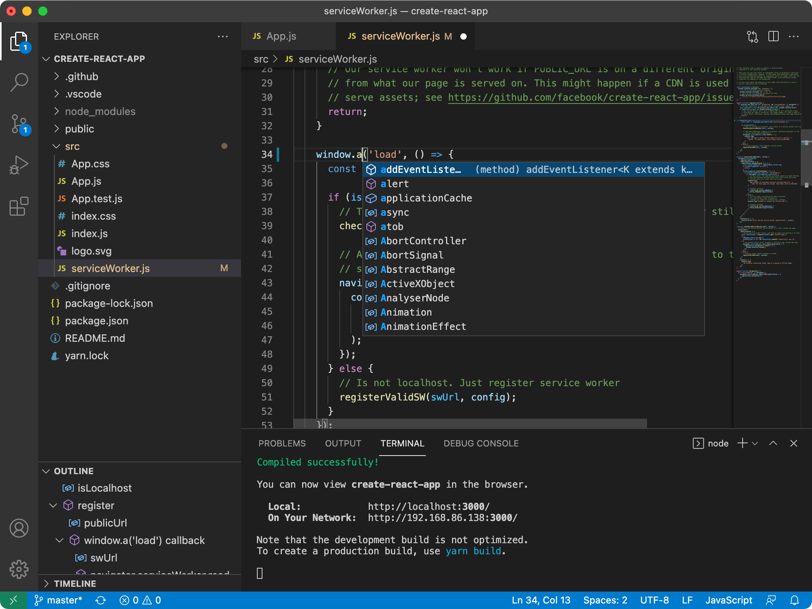

Getting started with programming
August 2020
üëëü¶† Covid Pandemic was on its full rage, And i was in üè† home
due
to üîí
lockdown and seeing a üé• movie on youtube.After seeing the movie i was scrolling the youtube for
more
inresting content and i found a video saying "app development" i was intrigued and i clicked on the
video and there my journey of programming began.And i learnt about java programming language and it
is my first language to learn.
learning my first programming language
I started with java without knowing the things it can do except app development
the only thing in my mind was to develop an app so i started it.Initially it felt very hard and
boring but later it became exciting/fearsome when i was introduced to more advanced topics

August 2020
My First IDE
When i started to learn java from the youtube tutorials i was introduced to
intellij ide when i saw it for the first time i felt it boring and hard to use but eventually i got
hold of it

August 2020
learning fast typing
When i used to learn java i used to type a lot slower and used to feel
frustrated and boring to type at such lower speed so i started learning fast typing

october 2020
getting started with python
When i was learning java i got issues with the compiler which i could not fix so
i
stopped learning it.But want to learn programming so i searched for alternate language then i got to
know about python and when i saw what it can do i got to know that i can build jarvis well as a fan
of ironman i was eager to build so embarked my journey in learning python without knowing the
amazing things it can do.

November 2020
My Second IDE
When i started learning python i was introduced to pycharm now i felt it same
like intellij ide and many of the features match and it was easy for me to use

November 2020
learning web development
When i build the jarvis assistant after learning python i found a major
disadvantage with using python which is it is not user friendly so i wanted to add some ui to my
assistant and when i searched on the internet i found i need to learn full stack development for
this so i started learning it with frontend.

January 2021
Meeting The Modern and the best IDE
The best thing that happened to me when i was learning web development was
getting
introduced to vscode when I first saw It I felt it modern and very cool I literally fell In love
with
It and It made me more productive and the extensions are the best!
vscode

January 2021
learning github
When i was learning web development i was introduced to github i wondered what
it was and felt it overwhelming with all the process to setup the github and add files but with the
guidance of the tutorials i was able to store my files in the repository and now i feel that it is
the best decision i made because it is now helping me to build software which i can share and
collaberate with people and also contribute to open source projects
My github

January 2021
learning bootstrap
When i was learning frontend i felt i overwhelming so i switched to bootstrap
after 2 monts of learning front and i was able to build good websites with minimal efforts and when
i build the website i did not feel satisfied as i did not wrote the complete code and i was unable
to customize the complete architecture of the website so i switched back to frontend

March 2021
learning flask
When i was done with the front end part i was wondering how can i connect my
assistant with it so i googled it and found about django and flask i had literally no idea about
them
so i gone through a video comparing flask and django and i finally decided to learn flask as it was
small and relatively easier
May 2021
learning sqlite
After learning flask i want to learn more things in the programming field so i
googled what more i can learn then i got to know about sqlite database

May 2021
learning C
When i was learning about the databases i got to know that python is build using
c and many of the programming languages are build using c.So i started learning it to explore it.

May 2021
learning Numpy
After learning Sqlite , Flask I wanted to know more about python and want to
learn
new things in python so I started with numpy.

May 2021
learning Pandas
After learning numpy I wanted to know more about python and want to learn
new things in python so I started with pandas.

May 2021
learning Matplotlib
After learning numpy and flask i started with matplotlib
May 2021
learning c++
After learning numpy,flask,matplotlib I wanted to try something new so I started
with c++. I was able to learn the basics of c++ and i was able to build some basic programs in c++.

June 2021